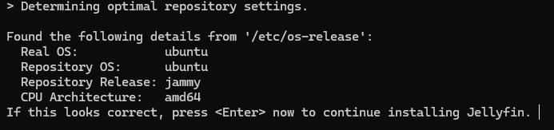
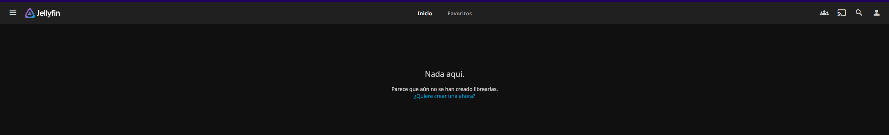
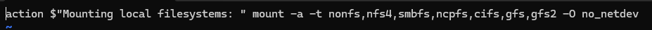
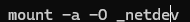
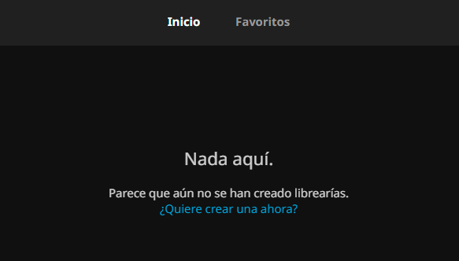
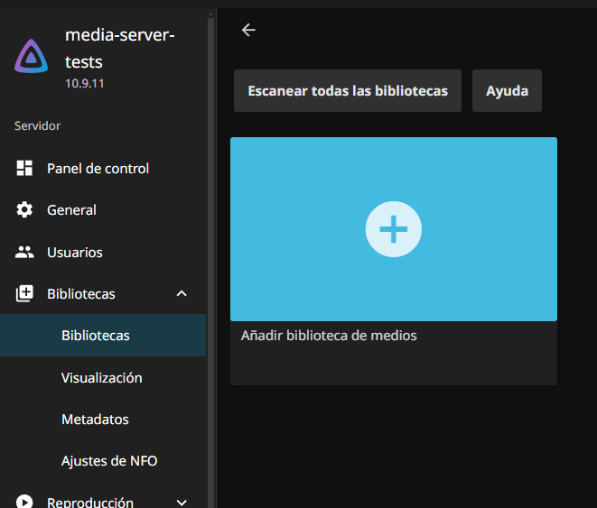
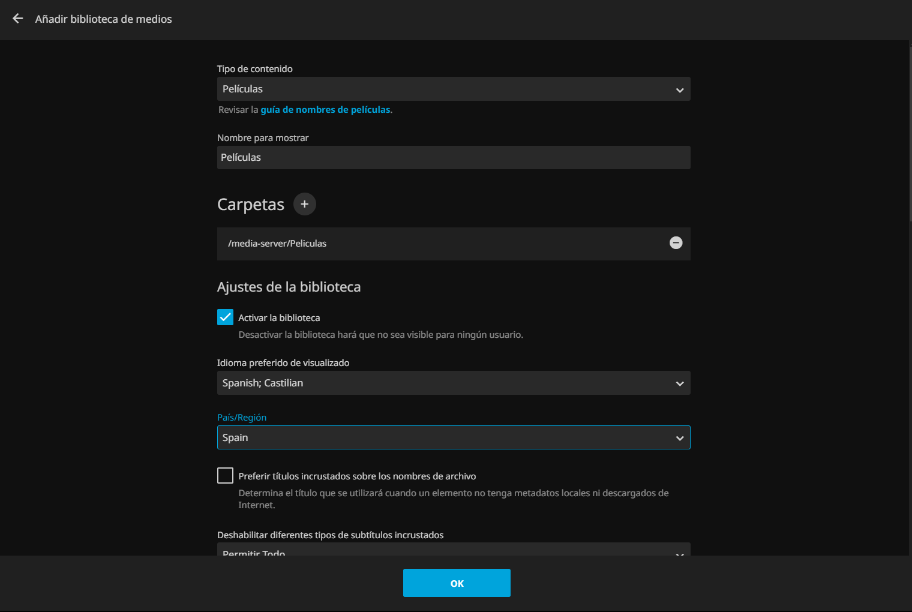

Este proyecto integra Jellyfin, QBittorrent, Jackett y OpenMediaVault para crear un media server completo y eficiente. Jellyfin permite la transmisión y gestión de contenido multimedia de manera sencilla y accesible, mientras que QBittorrent facilita la descarga de torrents. Jackett amplía la capacidad de búsqueda de contenido, y OpenMediaVault proporciona una plataforma robusta para la gestión del almacenamiento. Juntos, estos componentes ofrecen una solución integral para la organización, acceso y distribución de contenido multimedia, adaptándose a las necesidades de usuarios individuales y familias.
El primer pasó será instalar Jellyfin. Jellyfin es un servidor multimedia de código abierto que organiza y transmite contenido sin costos ni suscripciones.
Para instalar Jellyfin, seguiremos la docuemntación oficial:
curl -s https://repo.jellyfin.org/install-debuntu.sh | sudo bashUna vez ejecutemos el comando nos aparecerán las caracterísitcas de nuestro sistema, si son correctas, pulsamos "Enter":
Una vez hecho esto, empezará a instalar el sistema de Jellyfin
Una vez acabe, podemos comprobar si el servicio funciona correctamente con:
sudo systemctl status jellyfinPor defecto, el servicio web de Jellyfin se ejecuta en el puerto 8096. Accedemos al siguiente paso de configuación de Jellyfin a través del navegador.
Cuando acabemos la configuración, ya tendremos Jellyfin disponible:
Ahora montaremos una carpeta NFS en el servidor de Jellyfin, para añadir nuestras bibliotecas de archivos multimedia a través de nuestra red.
Yo tengo servidor NAS y un disco duro específico para esto, he creado una carpeta compartida por red a través de NFS. La montaremos en Linux:
Creo una carpeta llamada "media-server" en "/". Esto no es muy recomendable, pero lo haré así ya que los clientes de torrent no se llevan muy bien con las rutas muy extensas.
sudo mkdir /media-serverInstalaremos el paquete nfs-common para poder pontar carpetas NFS
sudo apt install nfs-commonPara montar la carpeta NFS automáticamente tendremos que modificar 3 ficheros. Así, cuando se reinicie la máquina, la carpeta se montará ella sola:
El primer fichero que tenemos que modificar es "/etc/fstab"
El segundo fichero será "/etc/rc.sysinit"
Y el tercer fichero: "/etc/rc.local"
Una vez configurado esto, podemos reiniciar la máquina y comprobar la que la carpeta se monta automáticamente. Ya habríamos acabado de configurar el NAS en nuestra máquina
Para añadir una carpeta a Jellyfin, solo tendremos que iniciar sesión y lo primero que nos aparecerá será esto:
Pulsaremos en "¿Quieres crear una ahora?"
Nos redirigirá a la configuración de de bibliotecas, pulsamos en añadir bibloteca de medios
Y configuraré la biblioteca como películas:
